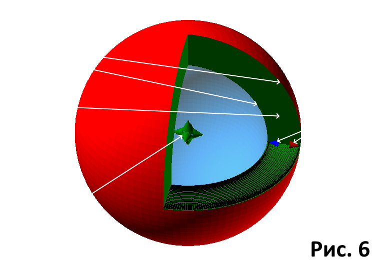
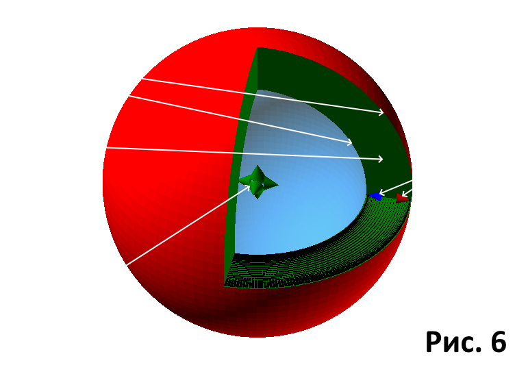

|
В главе "Пространство" мы прояснили, что находимся в чужеродном пространстве. Считаем его исходным пространством. Мы уже знаем, движение в нём возможно только
по волновому принципу, через кольцо. "Большой взрыв" является начальным импульсом движения в нём. Он рождает в исходном пространстве волну. Это может происходить по сценарию из главы "Большой взрыв" - толчок из одной точки во все стороны. По общему сценарию волна в целом растёт во все стороны, как надуваемый воздушный шарик. В этом случае мы видим обобщённый сценарий развития сферической волны. Но это волна в целом. Если же рассматривать раздельно, по направлениям, то сфера состоит из бесконечного количества продольных волн, проще говоря - лучей. Каждый из лучей - это самостоятельная волна, развивающаяся по направлению своего луча. Она возбуждается, как описано в главе "Пространство", через колебание по кольцу. Трёхгранное пространство изобилует шестигранными структурами. Каждое из возможных направлений толчка натыкается на очередную шестигранную структуру. Толчок движет точки пространства впереди себя, изгибая совпавшую по направлению с ним сторону шестиугольника.(Рис. 1). Изгиб достигает уровня, когда направлние в точке соприкосновения совпадает с направлением следующей стороны. Это создаёт условия для перемещения изгиба к ней. Таким образом изгибаются все шесть сторон, после чего точки выстраиваются в движущееся по кругу кольцо. Параметры толчка, сила и длительность, с первого раза выбирают размет шестиугольника по его стороне. Ведь все стороны этой фигуры равны между собой и равны радиусу описанной окружности. Пройдя определённое расстояние, толчок прошёл одну из сторон шестиугольника. То есть привёл в движение фигуру именно этого размера, и образовал из неё окружность с радиусом, равным пройденному пути. Одно движение определило размер и направление вектора будущей волны. Попутно пришли во вращение все меньшие по размеру шестиугольники, попавшие под усилие толчка. В итоге размах колебания, или его амплитуда, отражается в максимальном диаметре кольца (рис. 2). Движение в кольце - это движение по кругу. Но если смотреть со строны, то когда начало движется вперёд, конец движется обратно. Движение по кольцу вперёд мы воспринимаем как колебание вперёд, а назад - как обратное колебание. Но очевидно, что оба колебания происходят одновременно, ведь поток протекает по кольцу одновременно по всему кругу. Исходное направление толчка - это и есть направление движения данного луча волны. Окружность кольца отражает пройденный путь, поэтому будем считать его длиной волны. В целом данное колебание - не что иное, как процесс движения по кольцу. А для процесса требуется время. По сему логично будет определить, что время откладывается по диагонали, как колебание, и синхронизируется толчком на прямой направления движения волны. Отношение пройденного волной пути ко времени в таком случае является отношением длины окружности к её диаметру. И для любой окружности оно будет постоянным значением. Но это же значение является скорость движения волны. Вот у нас и определилось постоянство и конечность скорости движения волны, или скорости света. А так как колебания вперёд и назад происходят одновременно, считаем скоростью одного колебания отношение половины оборота по кольцу к диаметру. Колебание вперёд - прямой участок времени, колебание назад - обратный. Именно эти значения прямого и обратного времени фигурируют в теории относительности. И, как видно, это не означает возможности построения машины времени. Это просто описание двух частей волнового процесса. А волна далее, в следующих циклах, распостраняется непосредственной передачей вращения от первой шестигранной структуры к последующим, как между шестерёнками в сложном механическом устройстве (рис. 3). По этому общая скорость волны равна скорости колебания. Так появилось время одного цикла - как интервал длительности половины оборота по кольцу. И время в целом - как сумма интервалов колебаний одного направления. Но в пространстве шестигранные структуры организованы группами, как некие кластеры. В каждом из них восемь шестигранников (2 х 4) собщаются сторонами с шестью четырёхгранниками (2 х 3). (Рис. 4). Именно последние представляют из себя три взаимно параллельных пары, попарно перпендикулярных между собой плоскостей. И на самих плоскостях организация точек представляет собой квадратичную структуру. То есть организованы между собой в точности как трёхмерное пространство. Но мы уже выяснили, что исхоное пространство шестимерно. И вот на основании этого приходит мысль. Да, волна развивается в этих кластерах, на основе их шестиугольников. Все восемь колец вращаются синхронно, так как жёско связанны друг с другом. На рисунке часть сторон шестиугольников выделены цветами, что бы показать их выход на три пары взаимно перпендикулярных квадратичных плоскостей. Стороны обозначенные чёрным цветом являются общими для соседних шестиугольников. Через них осуществляется связь между ними. То есть через них синхронизируется движение всего кластера в целом. А ведь синхронизация осуществляется через время. Значит эти стороны шестиугольников, эти направления, если приравнять этот рисунок к системе координат, символизируют оси времени. Ведь сторона равна радиусу. То есть каждому из трёх измерений нашего Мира сопутствует по ординате времени. Теперь, чтобы привести нашу появляющуюся схему к рабочему состоянию, следует добавить одну маленькую деталь. Мы не видим самой волны, мы понимаем о её присутствии по наличию времени. Но видим вокруг её шесть обрамляющих квадратичных плоскостей. Не тех, что в составе волны, а следующие за ними.(Рис. 5). Они взаимно перпендикулярны, что в сумме предствляет трёхмерный мир. Появляется наш реальный мир, он виден нам, как разные стороны, разные поверхности одной плоскости. Между поверхностями, внутри плоскости, действует волна, это "Волна времени". Как ни станно это звучит, но у плоскости одновремённо три пары взаимно перпендикулярных сторон. И между ними кластеры "Волны времени". У человечества на данном этапе нет средств правильно отобразить эту картину. Ведь плоскость, обрамлённая с шести сторон, это не плоскость, это куб. По этому нарисую как смогу.(Рис. 6). От "Большого взрыва" рождена сферическая "Волна времени". Расширяется как шар, из центра во все стороны. Фронт волны образует плоскость, внутри которой обрабатывается один миг из жизни Вселенной. Все события Вселенной отображаются на шести сторонах этой плокости. Основное событие - рождение материи. На передней стороне колебание времени вперёд - рождается протон. На задней, колебание назад - рождается электрон. Тема изложена очеь коротко. Было бы желательно применять побольше рисунков и анимаций, но они сильно увеличивают объём статьи. Из за этого очень много незначительных, но важных для понимания деталей пропущено. Читателям следует напрячь воображение, чтобы достичь нужной степени понимания этого материала. Далее будет показано, как же волна строит материю. |


 

{kind=link}
| Назад. Оглавление |
Следующая страница. Образование материи. |